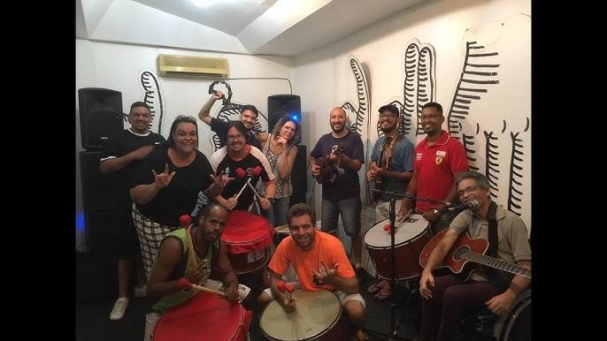
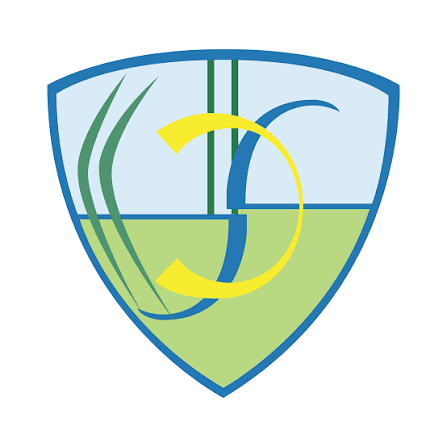
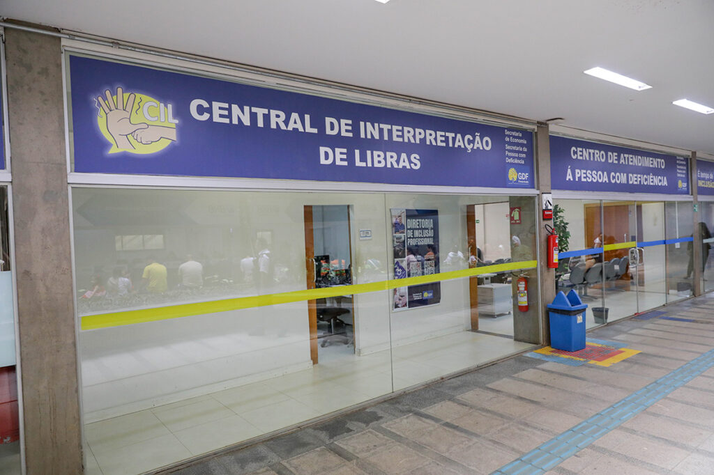

Me chamo Michelly Alves, meu primeiro contato com a Lingua de Sinais Brasileira (Libras) foi ainda na infância em que meu vizinho chamado Fernando (atualmente integrante da Banda Surdodum), brincavamos na nossa rua, e, enquanto isso, ele nos ensinou muito para comunicar com ele, depois, por volta dos 22 anos quando mudei de Igreja, nesta Instituição havia um Ministério de Sinais em que havia uma média de 15 Surdos, me interessei em opter conhecimento para ministrar a palavra e as músicas, então, me inscrevi e fui sorteada para cursar Libras no IFB campus Taguatinga e com o professor João Paulo Vitório, a partir daí, a Libras começou a fazer sentido no final do curso ele me estimulou a procurar o INOSEB, e, lá encontro ele novamente me dando força a prosseguir agora uma caminhada mais longa o Vestibular da UnB, o Curso de Licenciatura em Língua de Sinais Brasileira/Português Como Segunda Língua, nesta, graduação aprendi ...Fizemos uma disciplina chamada em que o projeto final é que o grupo monte um videoguia de algum espaço da UnB, explicando objetivos,horário de atendimento, dentre outros assuntos. Nosso grupo deve a ideia de colocar o nome do nosso projeto de Rolê pra Surdo Ver, porém, com o tempo alguns colegas desistiram do curso e com isso, o animo pelo projeto também finalizou. Agora com a disciplina Métodos e Técnicas do Multilinguismo procurando ideias, algo compatível com a proposta da Docente Helena Vigata lembrei e quis retomar de forma criar um site com informações de locais onde a Comunidade Surda tivesse contato com todo tipo de informações tais como, Cursos e Educação, Lazer aborta esporte, música, teatro e entretenimento, Posso Ajudar seria somente uma parte de utilidade pública com objetivo de trazer interatividade. Agradeço a Docente Helena Santiago Vigata por mais essa oportunidade deixou que os discentes da turma 1/2026 escolher seus respectivos temas e deixou com que nossa criatividade sem restringir assuntos para a criação dos respectivos projetos (Prótotipo/Site).
É a primeira escola da rede pública. As línguas ministradas são a Libras e o Português na modalidade escrita, a metodologia aplicada é a visual. Seu público alvo alunos com surdez de leve a profunda, com implante coclear ou não-oralizados.

Foi inaugurada recentemente
Desde o ano de 2015,
A Banda Surdodum, fundada pelos músicos Ana Soares, Reinaldo Braz e Chiquinho Batera, surgiu em Brasília em 1994.Com apoio de músicos ouvintes na voz, bateria, contrabaixo, guitarra e violão, o grupo foi pioneiro na inclusão. As aulas de percussão e voz oferecidas pela Banda Surdodum são gratuitas e abertas para todas crianças e adolescentes com surdez, independente de ter outras deficiências. Para divulgar o trabalho, a banda faz oficinas nas diversas regiões administrativas de Brasília e as crianças que se interessam continuam com as aulas semanais na sede da banda, que fica localizada na Asa Norte. Com apresentações em vários estados do País, aqui temos uma imagem de uma de suas apresentações em Banda completa.

Fundada no dia 04 de fevereiro de 2007, pela comissão constituída Deborah Dias de Souza, representante da ASB, Fernando Jacomini Felicio, representante da ADSB, Pedro Melo Soares de Morais, representante da ASSURP e Paulo Humberto Matos de Alencar, representante da ASSME. E no dia 04 de março tomou posse a primeira presidente fundadora Deborah Dias de Souza e pelo vice-presidente Pedro Melo de Soares Morais.

Sua principal preocupação é a democratização do esporte e lazer, participação dos campeonatos brasileiros, regionais e internacionais e a implantação de projetos sociais que beneficiem principalmente as crianças e jovens do DF. Você é surdoatleta e não tem a entidade para participar em eventos distritais, regionais, nacionais e/ou internacionais, basta nos procurar que indicaremos uma das nossas Entidades filiadas do Distrito Federal. O lema ou intuito é Não desista! sua vontade de participar nos eventos esportivos de Surdos. Endereço https://fbdsdf.org.br/Central de Intermediação em Libras (CIL) é promover o acesso das pessoas com deficiência aos serviços públicos com acessibilidade de comunicação em Libras. Orgão que presta serviços tais como, acompanhar cidadãos surdos em locais, exemplos, Instituições bancarias, hospitalares, de justiça como delegacias e fóruns. Voltado para a Inclusão em que seu principal objetivo dar autonomia a Comunidade Surda e Surdocega

INOSEB Instituto Nossa Senhora do BrasilTeve sua fundação no dia 17 de junho de 1969, seu público alvo pessoas com deficiência auditiva em que atende crianças, adolescentes, jovens e adultos. Oferece Cursos de Libras, aos domingos ministra a missa em Libras.Promove a Via Sacra dos Surdos um dos mais importante encontro da comunidade surda